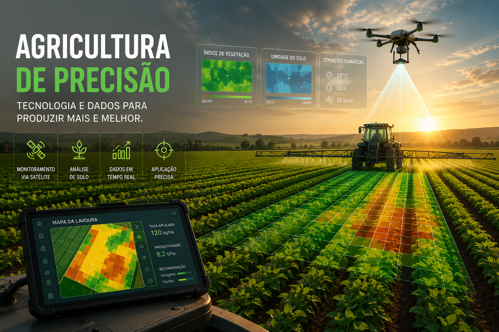

Sensores e mapas inteligentes ajudam a otimizar a produção.
A agricultura de precisão é um conjunto de técnicas que utiliza GPS, drones, sensores, imagens de satélite e softwares para monitorar as lavouras em tempo real. Com essas informações, o produtor consegue aplicar água, fertilizantes e defensivos apenas onde há necessidade, aumentando a produtividade e reduzindo desperdícios.
Realizam mapeamento aéreo, identificam falhas na plantação, pragas e áreas que necessitam de cuidados específicos.
Medem umidade do solo, temperatura e nutrientes, permitindo decisões rápidas e mais eficientes.
Guiam tratores e máquinas agrícolas com alta precisão, evitando sobreposição de operações e reduzindo desperdícios.
Aumento da produtividade agrícola
Redução no consumo de insumos
Monitoramento das áreas em tempo real